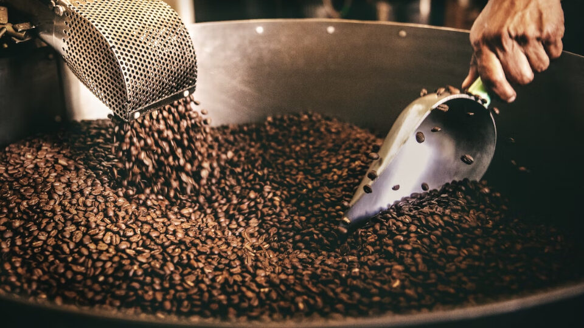

BEAN & ROAST
О нас
Компания Bean & Roast существует с 2015 года. Мы готовы делиться нашей страстью к кофе со всем миром и делать жизнь каждого нашего клиента более вкусной и яркой. .
Наша компания предлагает широкий ассортимент кофейных зерен из разных стран, таких как Колумбия, Коста-Рика, Гватемала и многих других.
Bean&Roast Coffee закупает зеленое зерно напрямую у фермеров — мы выбираем плантации с лучшим микроклиматом, чтобы привезти качественный кофе.
Благодаря мастерству наших обжарщиков, вы ощутите, каким разнообразным по вкусу может быть кофе и научитесь различать сорта разных регионов, отмечая оригинальность каждого.
Мы продолжаем расти, стремясь к изучению новых технологий, методов обжарки и обработки кофейных зерен. Благодаря этому сегодня нашей компании удалось занять ведущее место на рынке свежеобжаренного кофе.
О нас
Магазин
Контакты
BEAN & ROAST
est. 2015